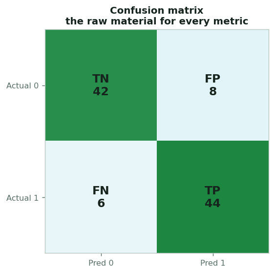
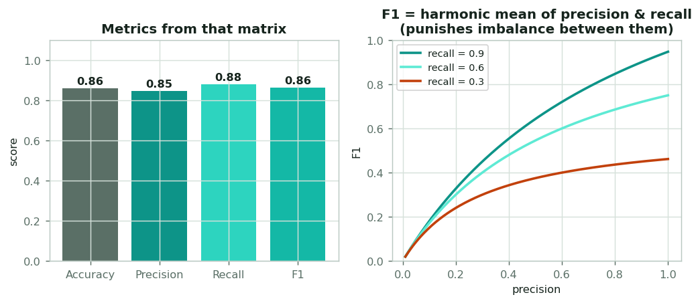
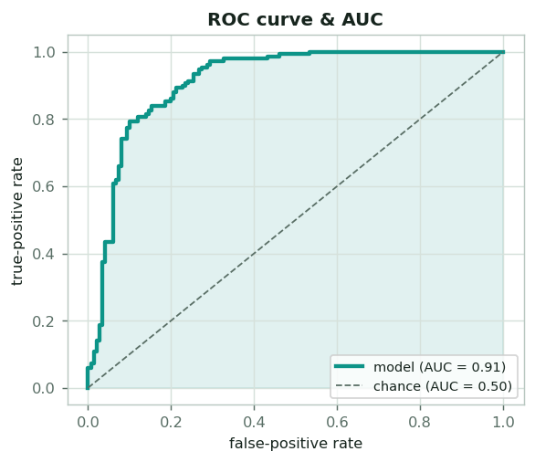

Metrics, explained
A model is only as trustworthy as the number you judge it by. This page explains the evaluation metrics used across the project, starting from the confusion matrix, through accuracy, precision, recall and F1, up to AUC and the survival C-index, and, just as importantly, when each one can mislead.
The confusion matrix
Every classification metric is built from four counts: true positives (TP) and true negatives (TN) (the correct calls), and false positives (FP) and false negatives (FN) (the two kinds of mistake). Laid out in a 2×2 confusion matrix, they're the raw material for everything below.
The two errors are not equally costly: in a clinical setting a false negative (missing a high-grade tumor) usually matters far more than a false positive. The metric you pick should reflect which mistake you care about.

Accuracy, precision, recall, F1

Each metric answers a different question:
- Accuracy = (TP+TN) / everything: "what fraction did I get right?" Simple, but misleading on imbalanced data (99% accuracy is trivial if 99% of cases are negative).
- Precision = TP / (TP+FP): "when I say positive, how often am I right?" Matters when false alarms are costly.
- Recall (sensitivity) = TP / (TP+FN): "of the real positives, how many did I catch?" Matters when misses are costly (the clinical priority).
- F1 = harmonic mean of precision & recall: a single balanced score that's only high when both are high, so a model can't win by acing one and ignoring the other.
| Metric | Formula | Answers | Watch out for |
|---|---|---|---|
| Accuracy | (TP+TN)/N | overall correctness | class imbalance |
| Precision | TP/(TP+FP) | trust in positive calls | ignores misses |
| Recall | TP/(TP+FN) | coverage of real positives | ignores false alarms |
| F1 | 2·P·R/(P+R) | balance of the two | hides which one is weak |
Beyond a single threshold: AUC & C-index
Accuracy/precision/recall all depend on where you set the decision threshold. Two metrics summarize performance across all thresholds, and they're the project's headline scores.
Area under the ROC curve
Sweep the threshold and plot true-positive vs false-positive rate; the area underneath (AUC) is the probability the model ranks a random positive above a random negative. 0.5 = chance, 1.0 = perfect, threshold-independent, ideal for small balanced cohorts. The grade finding (AUC 0.80) is this number. More on the classification page.


Concordance index
For survival, the analogue is the concordance index: across all comparable patient pairs, how often does the model give the higher risk to the one who died sooner? Again 0.5 = chance, and it handles censoring. Every survival result on the site is a C-index. See the survival page and the results.